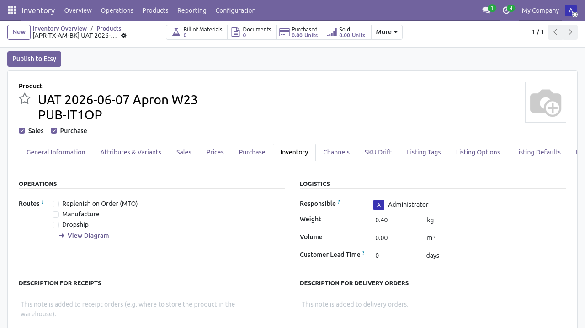
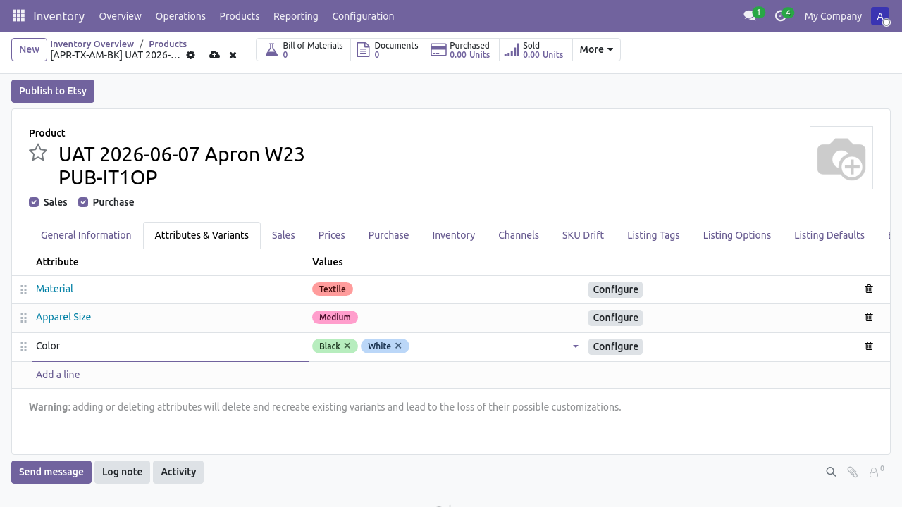
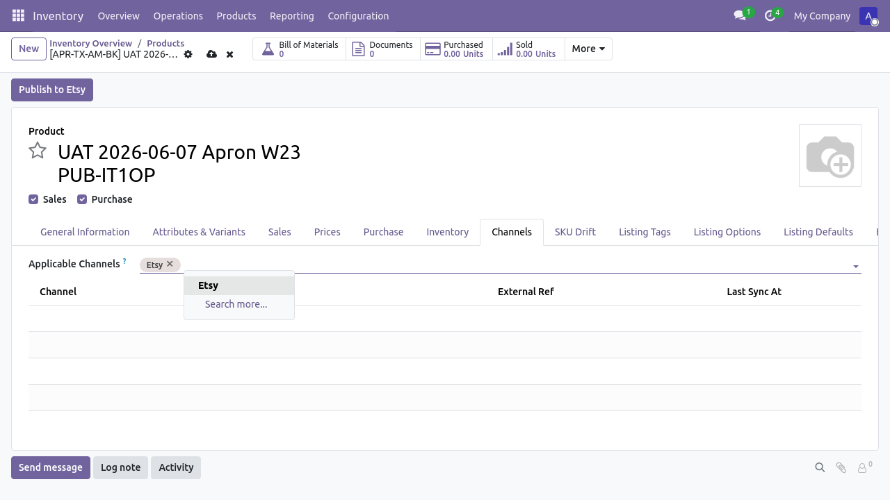
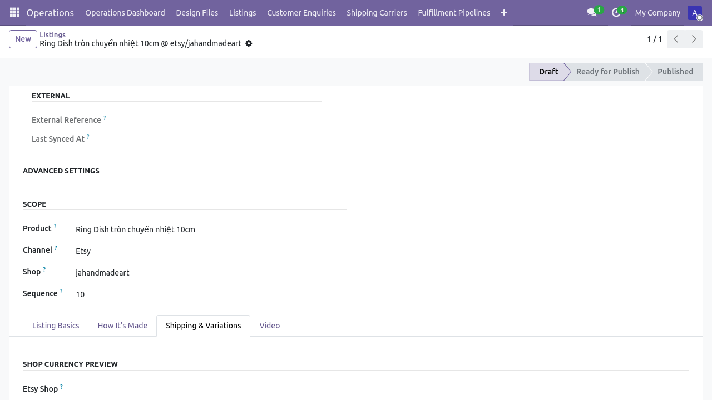
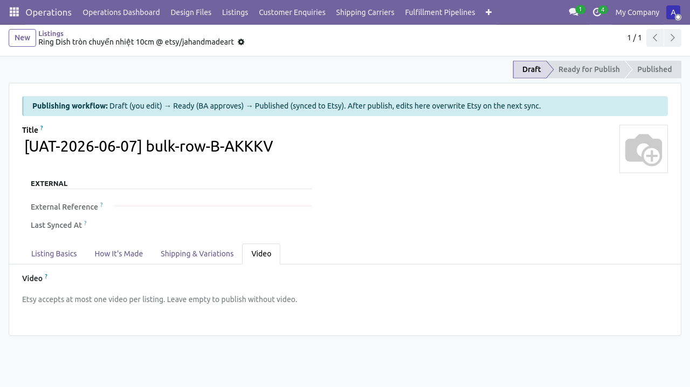
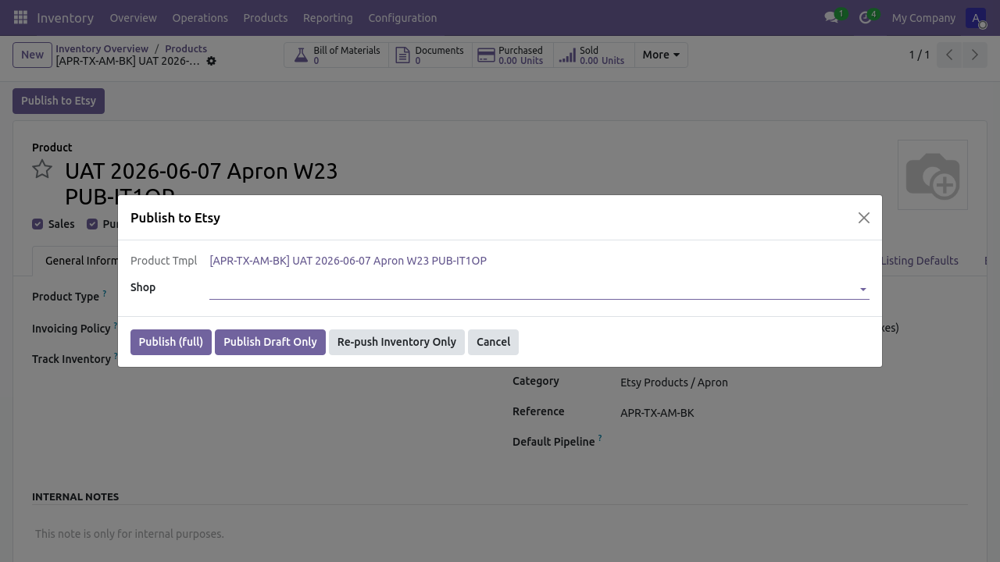

Flow 1 — Tạo sản phẩm và publish lên Etsy
Phiên bản: 1.0 · Ngày: 2026-06-07 · Mã luồng: flow-1
Sơ đồ kiến trúc: flow-1-tao-san-pham.html
Hướng dẫn chi tiết: ../HUONG_DAN_TAO_SAN_PHAM_VN.md
Kịch bản UAT: ../UAT_WALKTHROUGH_TAO_SAN_PHAM_VN_v1.2.md
Test tự động: tests/e2e/tests/uat_wave_2_3_listing.spec.ts
Luồng 1 mô tả chuỗi thao tác từ lúc BA Lead tạo sản phẩm mới trong Odoo đến lúc draft listing xuất hiện trên Etsy Shop Manager. Bao gồm các tính năng Wave-2/3 mới (taxonomy, shipping profile, who/when made, video, per-channel overrides, FX conversion).
Sơ đồ tóm tắt (swimlane)
Mở flow-1-tao-san-pham.html trong trình
duyệt để xem sơ đồ swimlane đầy đủ.
BA Lead Odoo Standard Form Etsy API
│ │ │
│── Tạo sản phẩm ────▶│ │
│ + chọn category │ │
│ + thuộc tính │ │
│ + ảnh + giá │ │
│ │ │
│── Publish Draft ───▶│── createListing ─────▶│
│ │ + uploadImage(s) │
│ │ + push_video (op) │
│ │◀── listing_id ────────│
│◀── Listing trên ────│ │
│ Etsy (state=draft) │ │
Giai đoạn 1 — Tạo sản phẩm
Vị trí: Menu Inventory > Products > New
Vai trò: BA Lead (multichannel_hub_core.group_ba_lead hoặc cao hơn)
Người dùng điền các trường cơ bản:
- Tên sản phẩm (
name) - Category (
categ_id) — tự động sinh SKU theo grammar - Thuộc tính biến thể (Tab Attributes & Variants): Material, Apparel Size, Color, …


Wave-2 ESTY-192: Thuộc tính được map sang Etsy property_id qua bảng
etsy.shop.attribute.mapping (Tier 2) hoặc product.attribute.x_etsy_property_id
(Tier 3). Bảng map xem ở Etsy > Shops > [shop] > Publisher Defaults.
Giai đoạn 2 — Cấu hình kênh và giá
Tab Channels: thêm Etsy vào x_channel_applicability_ids.
Trường giá: list_price (đơn vị: VND cho JaHandmadeArt).

Wave-3 ESTY-195: Sau khi publish, hệ thống tự động convert giá VND
sang đơn vị tiền tệ của shop (etsy.shop.listing_currency_id) qua
res.currency._convert(). Xem ô preview display_price_in_shop_currency
trên form multichannel.listing.

Giai đoạn 3 — Cấu hình Etsy-specific
Wave-2 ESTY-189 / 191 / 193: Các trường sau không cần điền thủ công;
hệ thống dùng default từ etsy.shop:
| Trường | Nguồn fallback (3-tier) | Field |
|---|---|---|
| Taxonomy | Per-listing → product → shop default | etsy_taxonomy_id |
| Shipping profile | Per-listing → product → shop default | etsy_shipping_profile_id |
| Who made / When made / Is supply | Per-listing → product → shop default | etsy_who_made etc. |
Nếu cần override per-listing (sau publish), mở form multichannel.listing,
tab "Shipping & Variations" hoặc "How It's Made".

Giai đoạn 4 — Video (tuỳ chọn)
Wave-2 ESTY-199: Mỗi listing Etsy hỗ trợ tối đa 1 video.
Vị trí: Form multichannel.listing → Tab "Video"
Field: video_attachment_id (Many2one tới ir.attachment)
Tải video lên ir.attachment (qua nút Upload trên form), chọn từ dropdown.
Publisher gọi POST /shops/{id}/listings/{id}/videos (multipart) khi publish.

Giai đoạn 5 — Publish Draft
Nút: Header form sản phẩm → "Publish to Etsy" → wizard hiện ra → chọn shop → "Run Publish Draft Only"

Wave-3 ESTY-190: Title / Description / Image trên Etsy lấy theo fallback chain:
- Per-listing override trên
multichannel.listing.title/.description/.image_1920 - Per-product trên
product.template.name/description_sale - Shop default trên
etsy.shop.default_title/.default_description/.default_image_1920
Để override mặc định ở cấp shop, mở Etsy > Shops > [shop] > Publisher
Defaults > Shop Brand-Voice Defaults.

Giai đoạn 6 — Xác nhận trên Etsy
Sau khi publish thành công:
product.channel.status.external_ref= listing_id của Etsymultichannel.listing.state=published- Etsy Shop Manager: https://www.etsy.com/your/shops/jahandmadeart/tools/listings/drafts

Kiểm thử
Test tự động cho luồng này:
cd tests/e2e
# Form-only (không gọi Etsy):
npm run test:wave-2-3:cfg # ESTY-194 shop config sanity
npm run test:wave-2-3:bulk # ESTY-197 bulk action
# Live publish (tạo draft thật trên JaHandmadeArt):
RUN_ETSY_PUBLISH=1 E2E_LISTING_PRICE=250000 npm run test:wave-2-3:publish
# Dọn draft test sau khi chạy:
python3 ../../scripts/cleanup_uat_etsy_drafts.py --apply
UAT walkthrough thủ công: ../UAT_WALKTHROUGH_TAO_SAN_PHAM_VN_v1.2.md
Báo lỗi
| Triệu chứng | Hành động |
|---|---|
| Publish 400 "price too low" | Kiểm tra list_price ≥ giá tối thiểu của Etsy cho shop (JaHandmadeArt = 250,000 VND) |
external_ref không update |
Chờ 20s rồi refresh; nếu vẫn trống, xem log _logger.warning('publish failed') |
| Taxonomy / shipping profile trống | Refresh cache: Etsy Shop > nút "Sync Taxonomy" / "Sync Shipping Profiles" |
| Brand-voice không áp dụng | Xác nhận field default_title etc. đã set; kiểm tra fallback chain ở services/etsy_listing_publisher.py:420-494 |